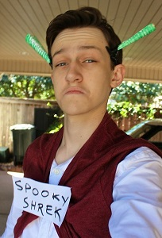
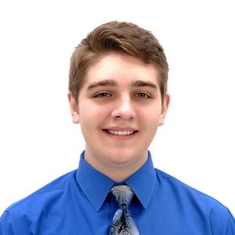
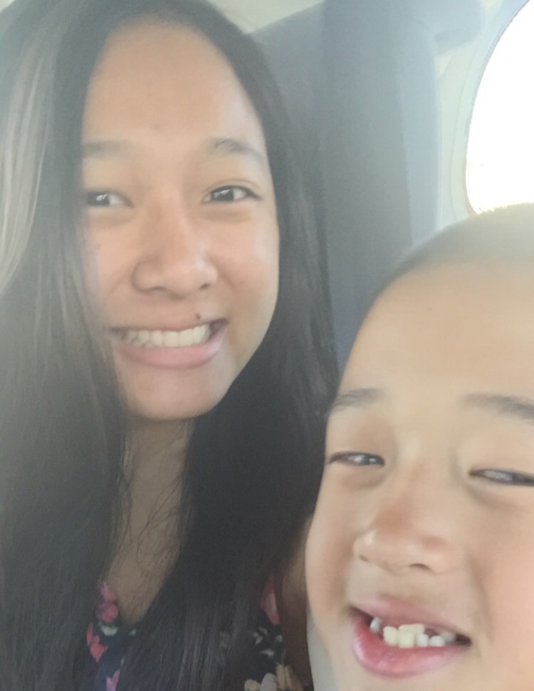
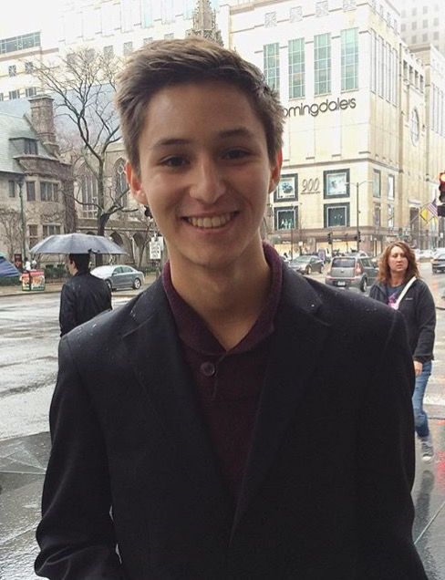

Zeta Omciron is a nationally recognized Computer Science honorary for high school
and community colleges. This website represents the local chapter for Klein Oak High School
in Spring, Texas, proud to represent the
founding chapter.
Zeta Omicron members partake in many activities such as
competitive programming contests, tutoring, and fundraising,
with strong emphasis on Collaborative Learning and Service.
Fun fact:
Zeta Omicron members consistently place
in Texas UIL competitions.
Fun fact:
The Klein Oak ZO chapter sends teams annually to Code Wars: Houston.
Davis helped co-found the club and is acting President. He has an extensive resume of web-development, application building, and placing in high level programming contests. He will be studying Computer Science at UT under the Turing Honors Program next fall.
Ryan helped co-found the club and is currently the Vice President. He has served as Supreme Chancellor and Historian throughout his journey in the club and will be studying Computer Science in college next year.

My name is Kevin George, I am entering my 4th year of computer science as an IB Computer Science HL Student.
I attended numerous UIL competitions, which helped further my computer science career.
I really enjoyed serving as supreme chancellor for the 2015-2015 school year.
I want to unite the CS community and start a revolution while encouraging the education
of computer science and the students of Klein Oak.
Hi! My name is Medha Chappidi and I am currently the Klein Oak Zeta Omicron treasure.
I have been in the organization for the entirety of my high school career, since the foundation for this club.
I have been a strong competitor in HP Code wars and UIL Competitions. I will be an IB HL Computer Science student next year.
I want to start an educational revolution and change the way students perceive computer science.
I hope to continue serving as an officer in the coming school year.
Hi, guys! My name is Emily Wang and I'm currently a junior entering my fourth year of computer science. I've been to various computer science UIL competitions over the course of two years and have participated in HP Code Wars 2015. As Historian, I've really enjoyed serving this club and its members, and I hope we can continue expanding this honor society and help others realize their love for computer science.
Hi, I'm Javier Romero! I've been a member of Zeta Omicron since 2013 and am now entering my fourth year of computer science at Klein Oak. As current Secretary, I'm grateful for the opportunities to reach out to new Comp Sci students and impart to them everything I have to offer. I've designed this website as part of my Independent Studies Project, which has enabled me to experience firsthand the trials and joy of web development.
